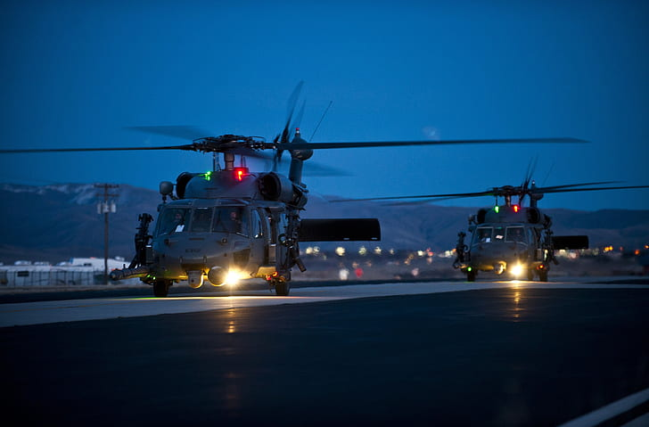

Utility aircraft are versatile aircraft that are designed and employed for a wide range of general-purpose functions and operations. These aircraft serve various roles in transportation, logistics, support, and other non-combat roles. They are often characterized by their versatility, reliability, and capacity to fulfill multiple tasks. Utility aircraft are commonly used for transporting passengers, cargo, or equipment. They can be configured with spacious cabins, large cargo holds, or external sling systems to accommodate different types of loads. These aircraft are utilized for civilian purposes, such as commercial air transport, emergency medical services, aerial firefighting, search and rescue operations, and humanitarian relief efforts. In military applications, utility aircraft serve as transport and logistics platforms. They can transport personnel, supplies, and equipment to support military operations or provide aerial resupply capabilities to remote or inaccessible areas. Utility aircraft can also be adapted for specialized roles, such as aerial surveillance, maritime patrol, aerial surveying, or electronic warfare support. Utility aircraft are often designed with characteristics that enhance their versatility and operational flexibility. They may feature rugged construction, short takeoff and landing capabilities, and the ability to operate from unpaved or remote airstrips. Some utility aircraft are also designed for amphibious operations, allowing them to land and take off from both land and water surfaces. ex. UH-60 Blackhawk